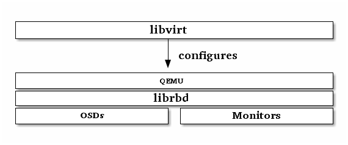

Using libvirt with Ceph RBD¶
The libvirt library creates a virtual machine abstraction layer between hypervisor interfaces and the software applications that use them. With libvirt, developers and system administrators can focus on a common management framework, common API, and common shell interface (i.e., virsh) to many different hypervisors, including:
- QEMU/KVM
- XEN
- LXC
- VirtualBox
- etc.
Ceph block devices support QEMU/KVM. You can use Ceph block devices with software that interfaces with libvirt. The following stack diagram illustrates how libvirt and QEMU use Ceph block devices via librbd.

The most common libvirt use case involves providing Ceph block devices to cloud solutions like OpenStack or CloudStack. The cloud solution uses libvirt to interact with QEMU/KVM, and QEMU/KVM interacts with Ceph block devices via librbd. See Block Devices and OpenStack and Block Devices and CloudStack for details. See Installation for installation details.
You can also use Ceph block devices with libvirt, virsh and the libvirt API. See libvirt Virtualization API for details.
To create VMs that use Ceph block devices, use the procedures in the following sections. In the exemplary embodiment, we’ve used libvirt-pool for the pool name, client.libvirt for the user name, and new-libvirt-image for the image name. You may use any value you like, but ensure you replace those values when executing commands in the subsequent procedures.
Configuring Ceph¶
To configure Ceph for use with libvirt, perform the following steps:
Create a pool (or use the default). The following example uses the pool name libvirt-pool with 128 placement groups.
ceph osd pool create libvirt-pool 128 128
Verify the pool exists.
ceph osd lspools
Create a Ceph User (or use client.admin for version 0.9.7 and earlier). The following example uses the Ceph user name client.libvirt and references libvirt-pool.
ceph auth get-or-create client.libvirt mon 'allow r' osd 'allow class-read object_prefix rbd_children, allow rwx pool=libvirt-pool'
Verify the name exists.
ceph auth list
NOTE: libvirt will access Ceph using the ID libvirt, not the Ceph name client.libvirt. See User Management - User and User Management - CLI for a detailed explanation of the difference between ID and name.
Use QEMU to create an image in your RBD pool. The following example uses the image name new-libvirt-image and references libvirt-pool.
qemu-img create -f rbd rbd:libvirt-pool/new-libvirt-image 2G
Verify the image exists.
rbd -p libvirt-pool ls
NOTE: You can also use rbd create to create an image, but we recommend ensuring that QEMU is working properly.
Preparing the VM Manager¶
You may use libvirt without a VM manager, but you may find it simpler to create your first domain with virt-manager.
Install a virtual machine manager. See KVM/VirtManager for details.
sudo apt-get install virt-manager
Download an OS image (if necessary).
Launch the virtual machine manager.
sudo virt-manager
Creating a VM¶
To create a VM with virt-manager, perform the following steps:
Press the Create New Virtual Machine button.
Name the new virtual machine domain. In the exemplary embodiment, we use the name libvirt-virtual-machine. You may use any name you wish, but ensure you replace libvirt-virtual-machine with the name you choose in subsequent commandline and configuration examples.
libvirt-virtual-machine
Import the image.
/path/to/image/recent-linux.img
NOTE: Import a recent image. Some older images may not rescan for virtual devices properly.
Configure and start the VM.
You may use virsh list to verify the VM domain exists.
sudo virsh list
Login to the VM (root/root)
Stop the VM before configuring it for use with Ceph.
Configuring the VM¶
When configuring the VM for use with Ceph, it is important to use virsh where appropriate. Additionally, virsh commands often require root privileges (i.e., sudo) and will not return appropriate results or notify you that that root privileges are required. For a reference of virsh commands, refer to Virsh Command Reference.
Open the configuration file with virsh edit.
sudo virsh edit {vm-domain-name}Under <devices> there should be a <disk> entry.
<devices> <emulator>/usr/bin/kvm</emulator> <disk type='file' device='disk'> <driver name='qemu' type='raw'/> <source file='/path/to/image/recent-linux.img'/> <target dev='vda' bus='virtio'/> <address type='drive' controller='0' bus='0' unit='0'/> </disk>Replace /path/to/image/recent-linux.img with the path to the OS image. The minimum kernel for using the faster virtio bus is 2.6.25. See Virtio for details.
IMPORTANT: Use sudo virsh edit instead of a text editor. If you edit the configuration file under /etc/libvirt/qemu with a text editor, libvirt may not recognize the change. If there is a discrepancy between the contents of the XML file under /etc/libvirt/qemu and the result of sudo virsh dumpxml {vm-domain-name}, then your VM may not work properly.
Add the Ceph RBD image you created as a <disk> entry.
<disk type='network' device='disk'> <source protocol='rbd' name='libvirt-pool/new-libvirt-image'> <host name='{monitor-host}' port='6789'/> </source> <target dev='vda' bus='virtio'/> </disk>Replace {monitor-host} with the name of your host, and replace the pool and/or image name as necessary. You may add multiple <host> entries for your Ceph monitors. The dev attribute is the logical device name that will appear under the /dev directory of your VM. The optional bus attribute indicates the type of disk device to emulate. The valid settings are driver specific (e.g., “ide”, “scsi”, “virtio”, “xen”, “usb” or “sata”).
See Disks for details of the <disk> element, and its child elements and attributes.
Save the file.
If your Ceph Storage Cluster has Ceph Authentication enabled (it does by default), you must generate a secret.
cat > secret.xml <<EOF <secret ephemeral='no' private='no'> <usage type='ceph'> <name>client.libvirt secret</name> </usage> </secret> EOFDefine the secret.
sudo virsh secret-define --file secret.xml <uuid of secret is output here>
Get the client.libvirt key and save the key string to a file.
ceph auth get-key client.libvirt | sudo tee client.libvirt.key
Set the UUID of the secret.
sudo virsh secret-set-value --secret {uuid of secret} --base64 $(cat client.libvirt.key) && rm client.libvirt.key secret.xmlYou must also set the secret manually by adding the following <auth> entry to the <disk> element you entered earlier (replacing the uuid value with the result from the command line example above).
sudo virsh edit {vm-domain-name}Then, add <auth></auth> element to the domain configuration file:
... </source> <auth username='libvirt'> <secret type='ceph' uuid='9ec59067-fdbc-a6c0-03ff-df165c0587b8'/> </auth> <target ...NOTE: The exemplary ID is libvirt, not the Ceph name client.libvirt as generated at step 2 of Configuring Ceph. Ensure you use the ID component of the Ceph name you generated. If for some reason you need to regenerate the secret, you will have to execute sudo virsh secret-undefine {uuid} before executing sudo virsh secret-set-value again.
Summary¶
Once you have configured the VM for use with Ceph, you can start the VM. To verify that the VM and Ceph are communicating, you may perform the following procedures.
Check to see if Ceph is running:
ceph health
Check to see if the VM is running.
sudo virsh list
Check to see if the VM is communicating with Ceph. Replace {vm-domain-name} with the name of your VM domain:
sudo virsh qemu-monitor-command --hmp {vm-domain-name} 'info block'Check to see if the device from <target dev='hdb' bus='ide'/> appears under /dev or under proc/partitions.
ls dev cat proc/partitions
If everything looks okay, you may begin using the Ceph block device within your VM.